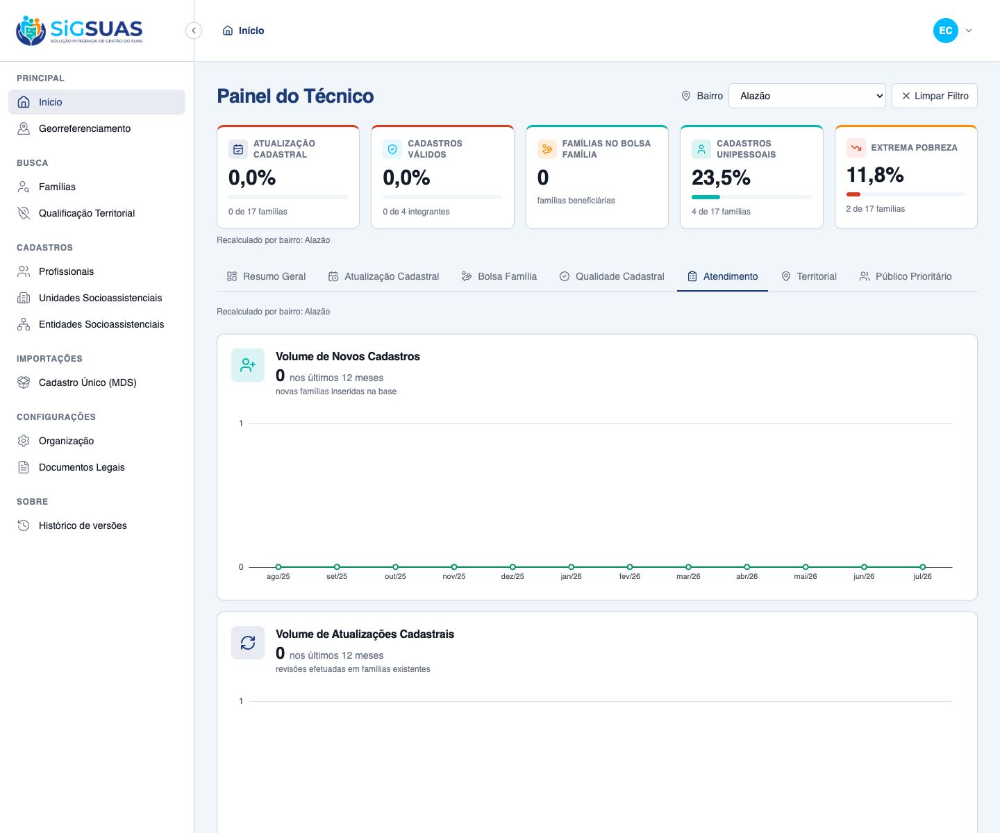
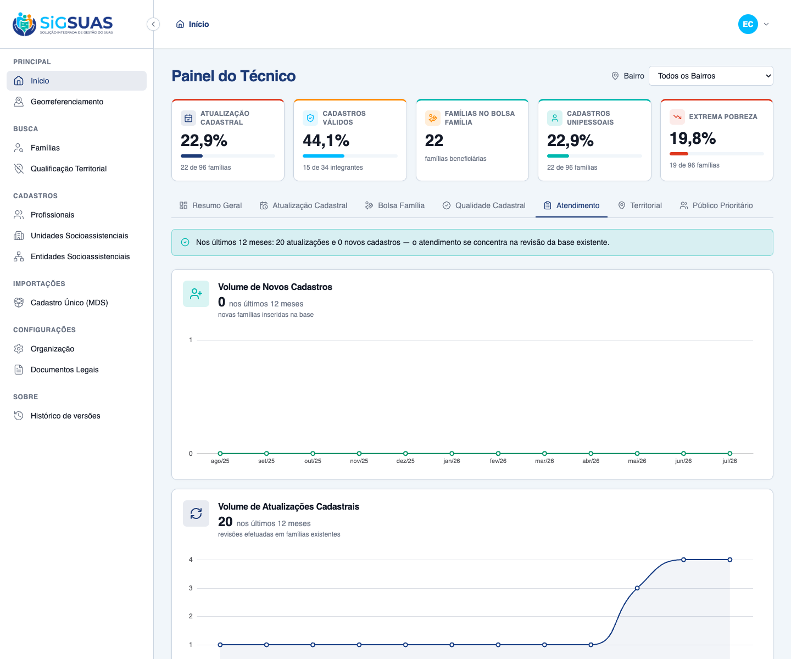

Relatório de Critérios de Aceite — Painel 5: Atendimento
Resumo
9 Critérios de Aceite verificados: 4 por navegador (dirigindo o app real como Master), 1 parcial (UI + suíte) e 4 automatizados (Pest). O Painel 5 entrega as duas séries temporais distintas — Volume de Novos Cadastros (por mês de source_registered_at) e Volume de Atualizações Cadastrais (por mês de source_updated_at) —, recalculadas sob o filtro global por Bairro (RG01) e isoladas por tenant. Resultado geral: todos os critérios ATENDIDOS. Dados de evidência semeados no tenant E2E (0 novas inclusões / 20 atualizações no recorte municipal; 0 / 0 no bairro Alazão).
| CA | Critério | Status |
|---|---|---|
| CA07 | Acompanhamento temporal de produção (duas curvas distintas) | ATENDIDO · navegador |
| RG01-a | Comportamento padrão — "Todos os Bairros" (consolidação municipal) | ATENDIDO · navegador |
| RG01-b | Comportamento dinâmico — seleção de bairro recalcula | ATENDIDO · navegador |
| RG01-c | Ação rápida — "Limpar Filtro" volta ao município | ATENDIDO · navegador |
| RN07 | Indicadores do Painel 5 (fontes de data corretas) | ATENDIDO · navegador + automatizado |
| CA-CONSISTENCIA | Curva de atualizações bate ponto a ponto com o Painel 2 | ATENDIDO · automatizado |
| CA-NULL | Famílias sem data são excluídas da respectiva série | ATENDIDO · automatizado |
| CA-VAZIO | Recorte sem produção retorna 12 pontos zerados | ATENDIDO · automatizado |
| CA-ISOLAMENTO | Isolamento multi-tenant | ATENDIDO · automatizado |
CA07 — Acompanhamento temporal de produção (duas curvas distintas) ATENDIDO · navegador
Critério (Gherkin): Dado que consulto o Painel 5 (aba "Atendimento") Quando navego pela linha do tempo Então visualizo, em gráficos distintos, a curva de novas famílias inseridas (por mês de source_registered_at) e a curva de cadastros atualizados (por mês de source_updated_at), mês a mês.
Como foi testado: Login como Master → abrir a aba Atendimento do Painel do Técnico. A aba apresenta dois gráficos de linha independentes: "Volume de Novos Cadastros" (verde) e "Volume de Atualizações Cadastrais" (azul), cada um com 12 pontos mês a mês (ago/25 → jul/26).
- Duas curvas temporais distintas renderizadas em Apache ECharts, uma por indicador.
- Volume de Novos Cadastros = 0 nos últimos 12 meses; Volume de Atualizações Cadastrais = 20 nos últimos 12 meses.
- Eixo temporal contíguo de 12 meses; meses sem produção aparecem com volume 0.

RG01-a — Comportamento padrão — "Todos os Bairros" (consolidação municipal) ATENDIDO · navegador
Critério (Gherkin): Dado que acabei de carregar a aba "Atendimento" Quando nenhum bairro está selecionado Então o endpoint é chamado sem neighborhood_uuid E as duas curvas refletem a consolidação municipal.
Como foi testado: Ao carregar, o filtro global de Bairro inicia em Todos os Bairros. As curvas exibem a consolidação municipal (0 inclusões / 20 atualizações).
- Filtro em "Todos os Bairros" por padrão (sem neighborhood_uuid).
- Séries no nível municipal: 0 novos cadastros e 20 atualizações.
RG01-b — Comportamento dinâmico — seleção de bairro recalcula ATENDIDO · navegador
Critério (Gherkin): Dado que o filtro global está em "Todos os Bairros" Quando eu seleciono um bairro Então o endpoint é chamado com o neighborhood_uuid do bairro E as duas curvas recalculam considerando apenas as famílias geocodificadas dentro do bairro.
Como foi testado: Selecionar o bairro Alazão no filtro global. A barra fixa e as duas curvas recalculam instantaneamente, restringindo-se às famílias geocodificadas dentro do polígono do bairro (ST_Contains).
- Filtro passa a "Alazão"; surge o botão "Limpar Filtro".
- Legenda "Recalculado por bairro: Alazão" exibida no painel.
- Curvas recalculadas para o recorte espacial: 0 novos cadastros e 0 atualizações (subconjunto do municipal).

RG01-c — Ação rápida — "Limpar Filtro" volta ao município ATENDIDO · navegador
Critério (Gherkin): Dado que estou com um bairro selecionado Quando eu aciono "Limpar Filtro" Então o endpoint é chamado sem neighborhood_uuid E o painel volta à consolidação municipal completa.
Como foi testado: Com "Alazão" selecionado, acionar Limpar Filtro. O painel retorna imediatamente à visão "Todos os Bairros".
- Filtro volta a "Todos os Bairros"; legenda de bairro removida.
- Curvas retornam à consolidação municipal (0 novos cadastros e 20 atualizações).

RN07 — Indicadores do Painel 5 (fontes de data corretas) ATENDIDO · navegador + automatizado
Critério (Gherkin): Dado um recorte com famílias Quando o painel é calculado Então "Volume de Novos Cadastros" traz 12 pontos (mês → nº de famílias inseridas, por source_registered_at) E "Volume de Atualizações Cadastrais" traz 12 pontos (mês → nº de famílias atualizadas, por source_updated_at) E cada série traz o total do período.
Como foi testado: A UI evidencia os dois indicadores com seus totais do período; a corretude da fonte de data por série (source_registered_at para inclusões, source_updated_at para atualizações), a contiguidade dos 12 pontos e a exclusão de nulos são cobertas pela suíte Pest (apêndice).
- Novos Cadastros agregados por mês de source_registered_at (curva verde).
- Atualizações agregadas por mês de source_updated_at (curva azul).
- Cada série acompanha o total do período ("nos últimos 12 meses").
- Corretude do agrupamento e das bordas verificada pela suíte automatizada.
CA-CONSISTENCIA — Curva de atualizações bate ponto a ponto com o Painel 2 ATENDIDO · automatizado
Critério (Gherkin): Dado o mesmo recorte e a mesma janela de 12 meses Quando comparo cadastral_updates.points do Painel 5 com monthly_evolution.points do Painel 2 (#10186) Então os meses e volumes são iguais ponto a ponto.
Como foi testado: Verificado pela suíte Pest — teste cruzado it matches the Painel 2 monthly evolution point by point (RN07).
- cadastral_updates.points idêntico a monthly_evolution.points do Painel 2 para o mesmo recorte.
Evidência por cobertura automatizada — ver Anexo.
CA-NULL — Famílias sem data são excluídas da respectiva série ATENDIDO · automatizado
Critério (Gherkin): Dado uma família com source_registered_at nulo Quando a curva de novos cadastros é calculada Então ela não é contada em nenhum ponto da curva de inclusões E, analogamente, source_updated_at nulo a exclui da curva de atualizações.
Como foi testado: Verificado pela suíte Pest — it excludes families with a null date from the respective series.
- source_registered_at nulo não entra na curva de inclusões; source_updated_at nulo não entra na de atualizações.
Evidência por cobertura automatizada — ver Anexo.
CA-VAZIO — Recorte sem produção retorna 12 pontos zerados ATENDIDO · automatizado
Critério (Gherkin): Dado um recorte sem nenhuma família (ou sem produção na janela) Quando o painel é calculado Então cada série retorna 12 pontos com families 0 e total 0, sem erro.
Como foi testado: Verificado pela suíte Pest — it returns two 12-point zero series when the scope has no families.
- Cada série retorna 12 pontos contíguos com families 0 e total 0, sem erro.
Evidência por cobertura automatizada — ver Anexo.
CA-ISOLAMENTO — Isolamento multi-tenant ATENDIDO · automatizado
Critério (Gherkin): Dado um usuário vinculado ao Tenant A Quando ele solicita o Painel 5 Então apenas famílias do Tenant A entram nas curvas E um neighborhood_uuid fora do município do Tenant A retorna 422.
Como foi testado: Verificado pela suíte Pest — DashboardAttendanceIsolationTest (BelongsToTenant) e it returns 422 for a neighborhood_uuid outside the tenant municipality.
- Famílias de outro tenant nunca entram nos agregados (Global Scope BelongsToTenant).
- neighborhood_uuid fora do município do tenant retorna 422; sem permissão retorna 403.
Evidência por cobertura automatizada — ver Anexo.
Anexo — Cobertura automatizada (Pest — AttendanceTest + DashboardAttendanceIsolationTest)
PASS Tests\Feature\Dashboard\AttendanceTest ✓ it returns two contiguous 12-point series from source_registered_at… 0.53s ✓ it counts a family in different months across the two independent s… 0.20s ✓ it excludes families with a null date from the respective series (C… 0.08s ✓ it matches the Painel 2 monthly evolution point by point (RN07) 0.11s ✓ it recalculates for a neighborhood, covering only geocoded families… 0.09s ✓ it returns two 12-point zero series when the scope has no families… 0.06s ✓ it returns 422 for a neighborhood_uuid outside the tenant municipal… 0.06s ✓ it denies the panel to the base operator without the dedicated role 0.05s ✓ it grants the panel to the Master without any add-on role 0.05s PASS Tests\Feature\TenantIsolation\DashboardAttendanceIsolationTest ✓ it never counts families from another tenant in the attendance pane… 0.09s Tests: 10 passed (43 assertions) Duration: 1.42s